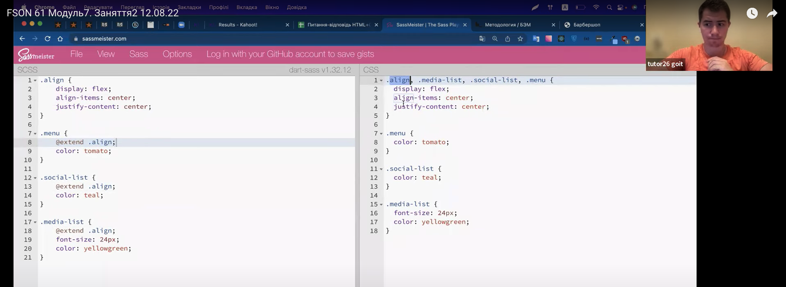
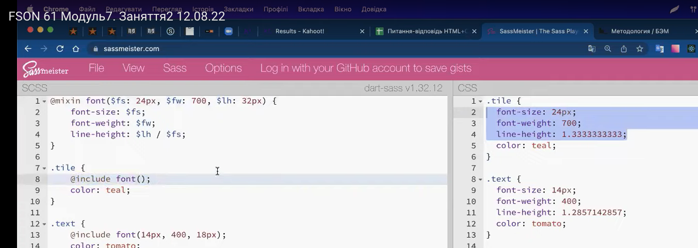
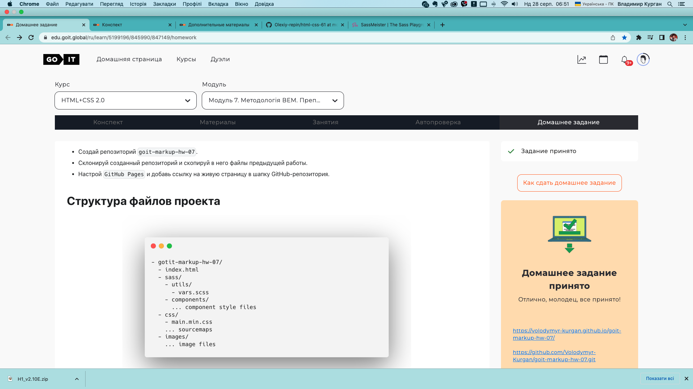

Модуль 7-2
FSON 61 Модуль7. Заняття2 12.08.22
Додав до індекс-копі шлях до мейн мін цсс
БЭМ (Блок, Элемент, Модификатор)
Трохи з'їхало:
Вирізаємо:
Вкладаємо:
Модал Клоз Бтн айкон = змінюємо на амберсанд = &:
Перевіряємо у Сасмейстері:

Так само:
вирізали саптайтл бефор + замінили на амерсанд + вставили у саптайтл:
додав знак долар = отримав = Сас-зміну. Бабки рішають ))))
Сравні (срав чи ні):
Приклад в редакторі
Цікава штука:
АЛЕ! Оцей клас елайн також перенісся. Щоб його не було ...

Додаємо знак відсотка %
Це зветься Плейсхолдер (коли ми ставимо відсоток)
Додаємо в Сасс + Утілс = плейсхолдерс і туди цю штуку:
Шукає куди застосувати:
Замінив:
Те, що зімпортував = в ЦеЕсЕсі = через кому:
Міксин
Міксин:
+ крута фіча - в дужках можна вказувати додаткові зміни:
Праворуч видно, як це працює:
Приклад змін в інших селекторах:
Лайнхайт = можна формули вписати:
Можна поставити значення "за замовчуванням":


Частина наша, а частина "за замовчуванням":
В редакторі:
БЕМ БЕМ БЕМ
БЕМ БЕМ БЕМ
Назва лого. Можна було зробити лого-лого, але нафіг-нафіг:
Зовнішній вигляд:
Модифікатор записується через нижнє підкреслювання
Спочатку елемент блоку - саптайтл, потім
нижнє підкреслювання
+ назва модифікатору
+ нижнє підкреслювання і значення цього модифікатору
Ми вже це робили:

Тільки тепер потрібне нижнє підкреслювання:
Наприклад у нас один з елементів відрізняється (інший колір):
створюємо додатковий клас = меню__лінк_карент
існує модифікатор "ключ-значення" в якому важлива назва модифікатору, але в нас інший
у нас - булевий
в меню створюємо __айтім та __лінк + _меню__лінк есцеесес
для кожного компонента повинна бути своя директорія
існує стиль - Ту Дешес (через дефіс коли)
такий стиль використовувся раніше
Відправив:
Є:
